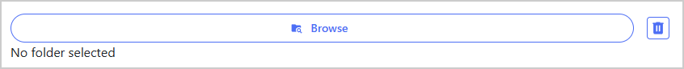
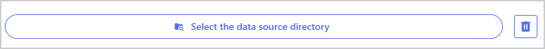
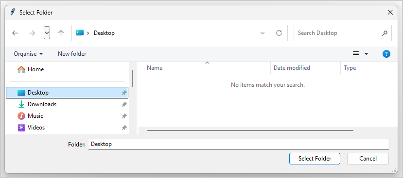
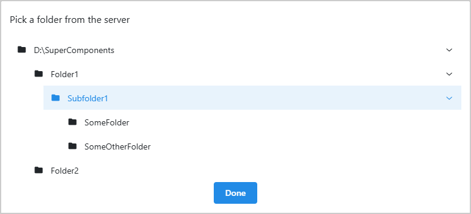

Folder Selector#
FolderSelector is a Dash All-in-One (AIO) component for browsing and selecting a directory. It
can operate in two modes: a native OS dialog (tkinter mode) and a browser-based modal with a tree
view of the file system (bootstrap mode).
Key features:
Dual operating modes: Supports tkinter (native OS dialog) and bootstrap (browser modal, requires beta opt-in) modes.
Automatic mode selection: Automatically selects the best mode based on environment and
tkinteravailability.Flexible configuration: Customizable browse and clear buttons, default path, and maximum path length.
Readable long-path display: Built-in selected-path display supports line clamping with ellipsis and full-path tooltip on hover.
Environment variable support: Mode and root path can be configured via environment variables for remote or containerized deployments.
Note
tkinter is Python’s standard library for creating graphical user interfaces (GUIs). It is included in the standard Python library and thus is available by default in most Python installations, but may not be available in some minimal or custom Python installations.

Usage#
Warning
The FolderSelector component must be wrapped inside a MantineProvider with a
dmc.NotificationContainer present in the application layout for error notifications
to work properly. If the notification container is missing or not properly configured, errors
fail silently without feedback to the user.
See the Add a NotificationContainer section of the Getting
Started page for instructions, including how to customize the container id via
configure().
Basic usage#
Import FolderSelector:
from ansys.solutions.dash_super_components import FolderSelector
Add FolderSelector to the page layout:
def layout():
return html.Div(
[
FolderSelector(
aio_id="select_folder_basic",
)
]
)
The following output is expected:
{kind=link}

Advanced usage#
The following example shows how to use the component in bootstrap mode and customize its button properties and options.
Bootstrap mode is a beta feature and is disabled by default. To enable it, call
configure() during app startup (for the
package-level beta feature setup, see Enable beta features):
import ansys.solutions.dash_super_components as dsc
dsc.configure(enable_beta_features=True)
To make the FolderSelector use bootstrap mode, import FolderSelectorMode in addition to
FolderSelector and set the mode parameter to FolderSelectorMode.BOOTSTRAP when
instantiating the component. In addition, pass custom settings in the options
dictionary, and customize the appearance of the browse and clear buttons with the
browse_button_props and clear_button_props dictionaries:
from ansys.solutions.dash_super_components import FolderSelector
from ansys.solutions.dash_super_components.folder_selector import FolderSelectorMode
def advanced_layout():
return html.Div(
[
FolderSelector(
aio_id="select_folder_advanced",
mode=FolderSelectorMode.BOOTSTRAP,
browse_button_props={
"disabled": False,
"children": "Select the data source directory",
},
clear_button_props={
"size": "lg",
},
options={
"display_field": {"enabled": False},
"default_path": "/path/to/default",
"browse_from": "/path/to/root",
"topmost": True,
"max_path_length": 260,
"max_tree_depth": 8,
"max_children_per_node": 20,
},
value="/path/to/preselected/folder",
style={"margin": "2rem"},
)
]
)
The following output is expected:
{kind=link}

Warning
In bootstrap mode, you must provide a root path for the folder tree by setting either
options["browse_from"] or the FOLDER_SELECTOR_BROWSE_FROM environment variable.
Accessing the selected folder#
The selected folder path can be accessed in a callback function using the
FolderSelector.ids.selected_folder(aio_id) store ID. The value is a string representing
the selected folder path, or None if no folder is selected.
@callback(
Output("output-div", "children"),
Input(FolderSelector.ids.selected_folder("select_folder_advanced"), "data"),
)
def display_selected_folder(selected_folder):
if selected_folder:
return f"Selected folder: {selected_folder}"
return "No folder selected"
Warning
The selected folder value is client-side browser state and should be treated as not trusted input (that is, it should be validated before use).
Properties#
Constructor parameters#
Parameter |
Description |
Type |
Required |
|---|---|---|---|
mode |
The technology to be used to create the folder selector pop-up.
Can be |
FolderSelectorMode |
No |
aio_id |
The unique identifier for the component. If not provided, a UUID is generated. |
str |
No |
browse_button_props |
Properties for the browse button. See dmc.Button properties. Default includes a folder icon and “Browse” text. |
dict |
No |
clear_button_props |
Properties for the clear button. See dmc.ActionIcon properties. Default includes a delete icon. |
dict |
No |
style |
Style properties for the component container. |
dict |
No |
options |
Dictionary containing additional configuration options (see below). |
dict |
No |
value |
The preselected folder path. Populates the selected folder store upon instantiation. |
str |
No |
Options dictionary#
The options parameter accepts a dictionary with the following keys:
Key |
Description |
Type |
Required |
|---|---|---|---|
default_path |
The path to be used as a default value for the selected folder when no folder has been selected yet or the selection has been cleared. |
str |
No |
browse_from |
The path to be used as a root for folder selection. Only works
with bootstrap mode. In bootstrap mode, this value must be
provided either in |
str |
No |
topmost |
If set to |
bool |
No |
max_path_length |
The maximum length of the path that can be selected. Default: System-dependent maximum path length. |
int |
No |
max_tree_depth |
The maximum folder depth included in bootstrap tree generation.
Default: |
int |
No |
max_children_per_node |
The maximum child folders included for each tree node int
in bootstrap mode. Additional folders are omitted from the tree.
Default: |
No |
|
display_field |
Dictionary with |
dict |
No |
Component IDs#
The component exposes the following IDs for use in callbacks:
FolderSelector.ids.selected_folder(aio_id): Store containing the selected folder path (str or None)FolderSelector.ids.browse_button(aio_id): The browse button componentFolderSelector.ids.clear_button(aio_id): The clear button component
Operating modes#
Tkinter mode#
Uses native OS dialog window for folder selection
Provides familiar OS-native user experience
Requires
tkinterpackage to be availableSelected via
mode=FolderSelectorMode.TKINTERRespects the
topmostoption to control window layering
{kind=link}

Bootstrap mode#
Bootstrap mode is a beta capability for browser-based folder selection in controlled environments
when tkinter is not available. It should not be used in production environments.
Is a beta feature and can only be used when enabled through
configure()withenable_beta_features=True(see Enable beta features).Uses browser-based modal with tree view of file system
Works in environments where
tkinteris not available (for example, remote deployments)Requires
browse_fromto be defined throughoptionsorFOLDER_SELECTOR_BROWSE_FROMenvironment variableHidden folders and symlink folders are excluded from the tree
Supports tree-size controls through
max_tree_depthandmax_children_per_nodeSelected via
mode=FolderSelectorMode.BOOTSTRAPAutomatically activated (when mode is omitted) if bootstrap beta is enabled and
FOLDER_SELECTOR_REMOTE_DEPLOYMENTenvironment variable is set totrue,1, oryes
{kind=link}

Operational guidance
Set
browse_fromto the narrowest practical rootAvoid broad roots such as monorepo roots or system-level roots
Keep
max_tree_depthandmax_children_per_nodeconservative for responsivenessPrefer tkinter mode for production workflows when native GUI access is available
Environment variables#
Variable |
Description |
|---|---|
FOLDER_SELECTOR_REMOTE_DEPLOYMENT |
If set to |
FOLDER_SELECTOR_BROWSE_FROM |
Specifies the root path for folder browsing in bootstrap mode.
Can be overridden by the |
Limitations#
Bootstrap mode is intended for controlled environments with a narrowly scoped
browse_fromroot and trusted usage patterns.The tree can omit folders when
max_tree_depthormax_children_per_nodelimits are reached. In that case, the affected nodes include a description message indicating truncation.Hidden folders (names beginning with
.) and symlink folders are intentionally excluded from the bootstrap tree.If
tkinteris unavailable and bootstrap beta is not enabled, folder browsing is blocked and the component shows a notification explaining how to enable bootstrap mode. See Enable beta features.
Full example#
For a complete working example, check out the showcase example.
The example demonstrates:
A basic folder selector using default settings, with the selected path displayed via a callback
Switching between bootstrap and tkinter modes, toggling the built-in path display field, toggling a default path, and setting
max_display_linesvia theoptionsdictionaryCustom styling of the component container, browse button, and clear button
Two folder selectors demonstrating persistence strategies: no persistence (resets on recreation) and backend persistence (restored from the server per project)
For a minimal self-contained runnable example, see the Folder Selector page in the Examples gallery.
Notes#
Consider preserving the selected folder value by passing it to the
valueparameter, so it gets preserved when recreating the component with different settings etc.The
browse_fromoption is only effective in bootstrap mode and has no effect in tkinter modePath validation is automatically performed based on the
max_path_lengthsetting
Source code#
For the full API reference of FolderSelector, see
FolderSelector.
Check out the component source code to discover the underlying logic. Contributions are welcomed. You can extend the component functionalities by raising a pull request in the dash-super-components package.